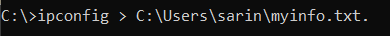
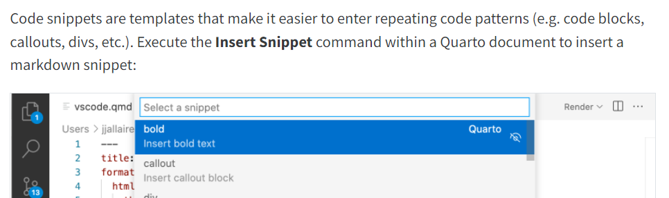

To preview markdown in vscode, we need an extention to convert markdown to html and pdf. Several exntentions are available but Github markdwon preview has been found to be the most user friendly.
- Open cmd: CONTROL + R, type cmd
- get a list of files in a dir: type dir
- change to a dir and go back to the previous dir: type cd and cd..; example: cd quarto, cd ..
- Cancel a command: CONTROL + C
- Finish a command: Append /? to your command
- USe Tab to complete: cd hold q, press tab: cd ./quarto/
- Up and Down: previous commands
- Save your command prompt: ipconfig> dir ;example:

- Use pip (preferred installer program) to to install, update or manage software packages written in Python; examples:
- pip install –upgrade quarto (upgrade quarto frequently for now)
- pip help
- pip –version
- pip install
Snippets In Quarto
- Control Shift P
- Select Insert snippets
- Define your own snippets: File> properties> User snippets> search quarto: the template is defined.
- quarto.json file is the snippets defined by me. You can easily copy the file in your snippets folder(after openning json file in step3, cope the path locate it), or just copy paste the usefull snippets in your json file.
Current issue: snippets are only available with above method, instead of just shwoing by typying or using Control Space, which is also what is stated in quarto website, see below:
